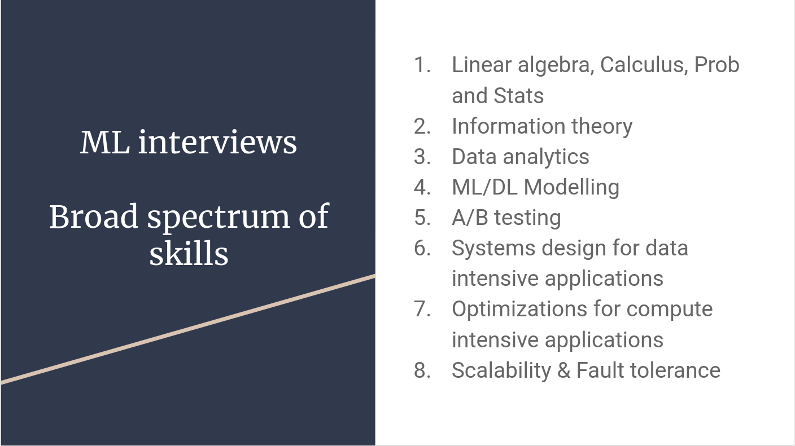
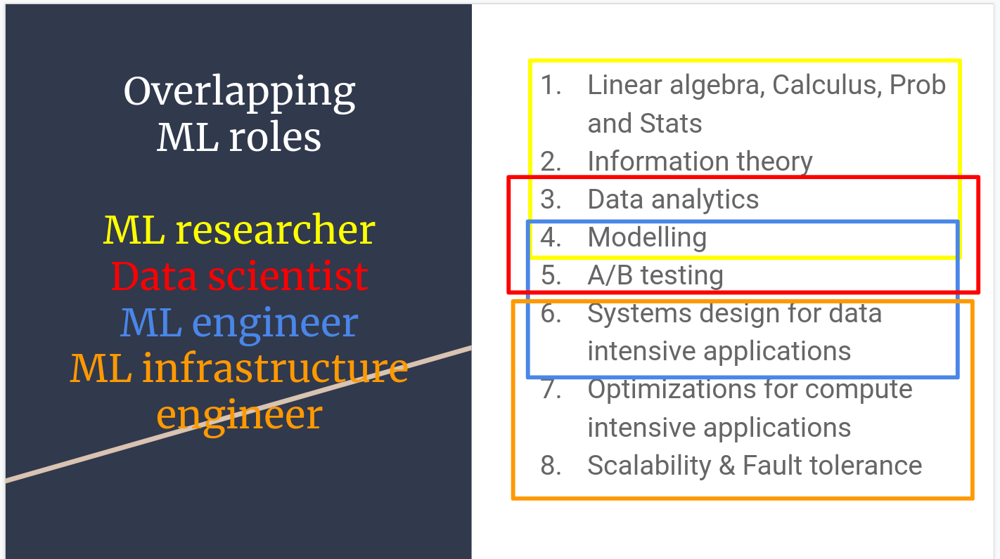

<!DOCTYPE html>
<html lang="en">

<head>
    <meta charset="utf-8" />
    <meta name="viewport" content="width=device-width, initial-scale=1.0, maximum-scale=1.0, user-scalable=no" />

    <title>Using the cloud</title>
    <link rel="shortcut icon" href="./favicon.ico" />
    <link rel="stylesheet" href="./dist/reveal.css" />
    <link rel="stylesheet" href="./static/css/reset.css" />
    <link rel="stylesheet" href="./static/css/evo.css" />
    <!-- <link rel="stylesheet" href="/_assets/evo" id="theme" /> -->
    <link rel="stylesheet" href="./css/highlight/vs.css" />

    <link rel="stylesheet" href="././_assets/static/css/evo.css" />
    <link rel="stylesheet" href="././_assets/static/css/reset.css" />

</head>

<body>
    <div class="reveal">
        <div class="slides"><section ><section data-markdown><script type="text/template">

## "Using" the Cloud


</script></section><section data-markdown><script type="text/template">

### Cloud Computing: A technical *evolution*

- More Virtualization
- More API
- More Managed Services

</script></section></section><section ><section data-markdown><script type="text/template">

### Cloud Computing: A usage **revolution**

</script></section><section data-markdown><script type="text/template">

#### Autonomy : access to computing power

- Outsourcing infra, maintenance, security, development of new services
- Pay-per-use with "Infinitely scalable" infrastructure
- "No need to plan out" infrastructure
  - Enabling innovation
  - Power in the hands of developpers/builders

</script></section><section data-markdown><script type="text/template">

#### Changing the way we interact with hardware

We interact with cloud providers using APIs...

```bash
gcloud compute --project=deeplearningsps instances create ${INSTANCE_NAME} \
    --zone=${ZONE} \
    --machine-type=n1-standard-8 \
    --scopes=default,storage-rw,compute-rw \
    --maintenance-policy=TERMINATE \
    --image-family=ubuntu-1804-lts \
    --image-project=ubuntu-os-cloud \
    --boot-disk-size=200GB \
    --boot-disk-type=pd-standard \
    --accelerator=type=nvidia-tesla-p100,count=1 \
    --metadata-from-file startup-script=startup_script.sh
```

</script></section><section data-markdown><script type="text/template">

#### Before...


</script></section><section data-markdown><script type="text/template">

#### After...

```yaml
resources:
- name: vm-created-by-deployment-manager
  type: compute.v1.instance
  properties:
    zone: us-central1-a
    machineType: zones/us-central1-a/machineTypes/n1-standard-1
    disks:
    - deviceName: boot
      type: PERSISTENT
      boot: true
      autoDelete: true
      initializeParams:
        sourceImage: projects/debian-cloud/global/images/family/debian-9
    networkInterfaces:
    - network: global/networks/default
```

</script></section><section data-markdown><script type="text/template">

#### Infrastructure as Code

- Infra is now managed via text files
- Data is securely stored on storage
- So we store code + urls on git... and everything is reproducible !
- We use automated deployment tools (terraform, gcp deployment manager...)

</script></section><section data-markdown><script type="text/template">

#### Pet vs Cattle


</script></section></section><section ><section data-markdown><script type="text/template">

#### Fully virtual development environment

</script></section><section data-markdown><script type="text/template">


</script></section><section data-markdown><script type="text/template">

#### [Github Codespaces](https://docs.github.com/en/codespaces/overview)

* [Github Codespaces](https://docs.github.com/en/codespaces) : A managed development environment by Microsoft Azure
* A virtual machine and a [containerized development environment](https://docs.github.com/en/codespaces/setting-up-your-project-for-codespaces/adding-a-dev-container-configuration/introduction-to-dev-containers)
* A lot of built-in bonuses including "in-browser" connection & TCP port forwarding with reverse proxy

  <!-- .element: height="50%" width="50%" -->


</script></section><section data-markdown><script type="text/template">

#### Remote Development : Your future daily routine

  <!-- .element: height="50%" width="50%" -->

[Uber Blog describing their way of working](https://www.uber.com/en-FR/blog/devpod-improving-developer-productivity-at-uber/)

</script></section></section><section ><section data-markdown><script type="text/template">

### Let's discuss

</script></section><section data-markdown><script type="text/template">

**Is using cloud computing less expensive ?**

- 👍 Depend on your {normal / peak} utilization
- 👍 Access to latest hardware without investment
- 👎 Fully utilized hardware is more expensive on the cloud
- 👎 CLOUD HYGIENE !
  - Watch for unused services / storage
  - Shutdown machines when not used
  - Services stack up...

<!-- .element: class="fragment" -->

</script></section><section data-markdown><script type="text/template">

**Is using cloud computing more secure / safer ?**

- 👍 The best engineers in the world working on it
- 👍 Secure regions / private cloud...
- 👎 Your data somewhere in some datacenter...
- 👎 "Dependency" towards your cloud provider...

<!-- .element: class="fragment" -->

</script></section></section><section ><section data-markdown><script type="text/template">

### Cloud usage, some anecdotes

</script></section><section data-markdown><script type="text/template">

#### Big Tech public cloud bills

- Apple in 2019 [350m$ on AWS / year](https://www.theverge.com/2019/4/22/18511148/apple-icloud-cloud-services-amazon-aws-30-million-per-month)
- Spotify in 2018 [150m$ on GCP / year](https://www.cnbc.com/2018/03/20/spotify-will-spend-nearly-450-million-on-google-cloud-over-3-years.html)
- Lyft in 2019 [100m$ on AWS / year](https://www.cnbc.com/2019/03/01/lyft-plans-to-spend-300-million-on-aws-through-2021.html)

</script></section><section data-markdown><script type="text/template">

#### Pokemon Go Launch (2016)


[source](https://cloud.google.com/blog/products/gcp/bringing-pokemon-go-to-life-on-google-cloud)

</script></section><section data-markdown><script type="text/template">

#### Doctolib (2021)


[source](https://medium.com/doctolib/monday-july-12-at-doctolib-a-retrospective-9ac15c46ac19)

</script></section><section data-markdown><script type="text/template">

#### Facebook October 2021 Failure


https://blog.cloudflare.com/october-2021-facebook-outage/

</script></section><section data-markdown><script type="text/template">

#### AWS US-EAST-1 Failure (2022)

> 13 June 2023: AWS. The largest AWS region (us-east-1) degraded heavily for 3 hours, impacting 104 AWS services. A joke says that when us-east-1 sneezes the whole world feels it, and this was true: Fortnite matchmaking stopped working, McDonalds and Burger King food orders via apps couldn’t be made, and customers of services like Slack, Vercel, Zapier and many more all felt the impact. (incident details). We did a deepdive into this incident earlier in AWS’s us-east-1 outage.

https://aws.amazon.com/message/12721/

</script></section><section data-markdown><script type="text/template">

#### Links

<http://highscalability.com>

<http://highscalability.com/all-time-favorites>

[Netflix: What happens when you press play - 2017](http://highscalability.com/blog/2017/12/11/netflix-what-happens-when-you-press-play.html)

[Mind boggling statistics on Amazon Prime Day](https://aws.amazon.com/blogs/aws/amazon-prime-day-2019-powered-by-aws/)

</script></section></section><section ><section data-markdown><script type="text/template">

### What does it mean for YOU ?


</script></section><section data-markdown><script type="text/template">



</script></section><section data-markdown><script type="text/template">



</script></section><section data-markdown><script type="text/template">

#### Your mileage may vary

depending on:

- Your company
- Your role

but you will "deal with" cloud computing one way or another !

</script></section><section data-markdown><script type="text/template">

#### Personal experience

- What do I use ?
- Why do I use it ?
- How do I do ?</script></section></section></div>
    </div>
    <!-- <div id="footer-container" style="display:none;"> -->
    <div id="footer-container">
        <div id="footer">
            Tools of Big Data
            <br />
            <a href="https://supaerodatascience.github.io/deep-learning/">https://supaerodatascience.github.io/DE/</a>
            <br />
            <a rel="license" href="http://creativecommons.org/licenses/by-sa/4.0/"></a>
        </div>
    </div>
    <script src="./dist/reveal.js"></script>

    <script src="./plugin/markdown/markdown.js"></script>
    <script src="./plugin/highlight/highlight.js"></script>
    <script src="./plugin/zoom/zoom.js"></script>
    <script src="./plugin/notes/notes.js"></script>
    <script src="./plugin/math/math.js"></script>
    <script>
        function extend() {
            var target = {};
            for (var i = 0; i < arguments.length; i++) {
                var source = arguments[i];
                for (var key in source) {
                    if (source.hasOwnProperty(key)) {
                        target[key] = source[key];
                    }
                }
            }
            return target;
        }

        // default options to init reveal.js
        var defaultOptions = {
            controls: true,
            progress: true,
            history: true,
            center: true,
            transition: 'default', // none/fade/slide/convex/concave/zoom
            plugins: [
                RevealMarkdown,
                RevealHighlight,
                RevealZoom,
                RevealNotes,
                RevealMath
            ]
        };

        // options from URL query string
        var queryOptions = Reveal().getQueryHash() || {};

        var options = extend(defaultOptions, {"transition":"fade","transitionSpeed":"default","controls":true,"slideNumber":true,"width":"100%","height":"100%"}, queryOptions);
    </script>


    <script>
        Reveal.initialize(options);
        var footer = $('#footer-container').html();
        $('div.reveal').append(footer);
        var logo = $('#logo-container').html();
        $('div.reveal').append(logo);
    </script>
</body>

</html>
